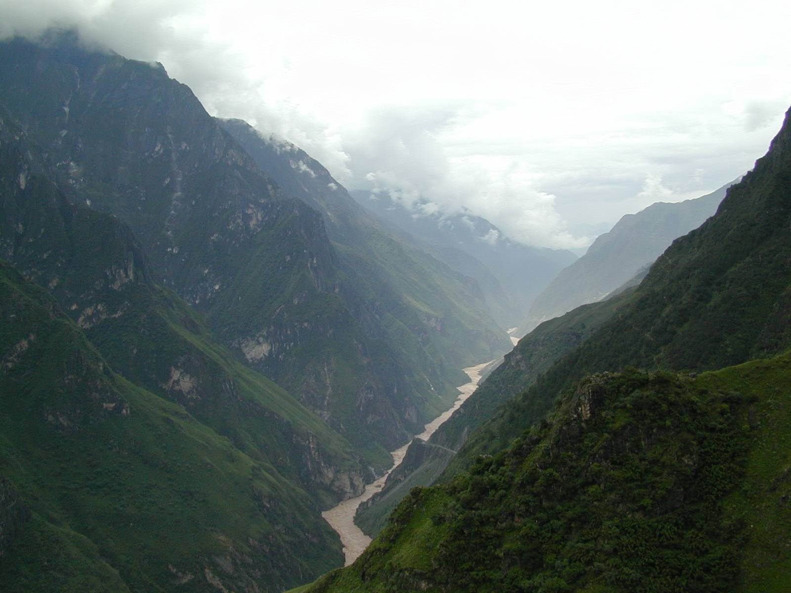
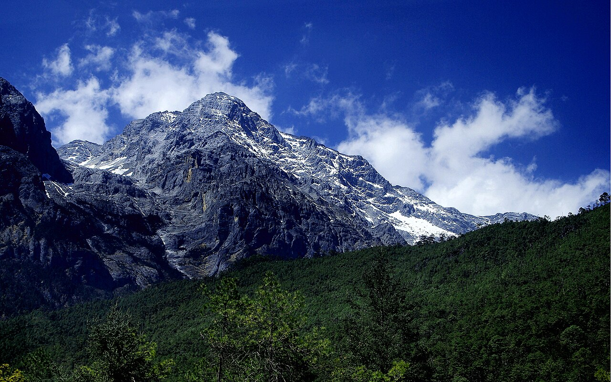
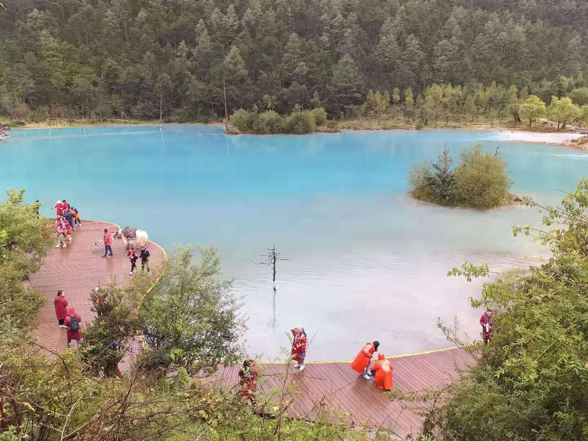
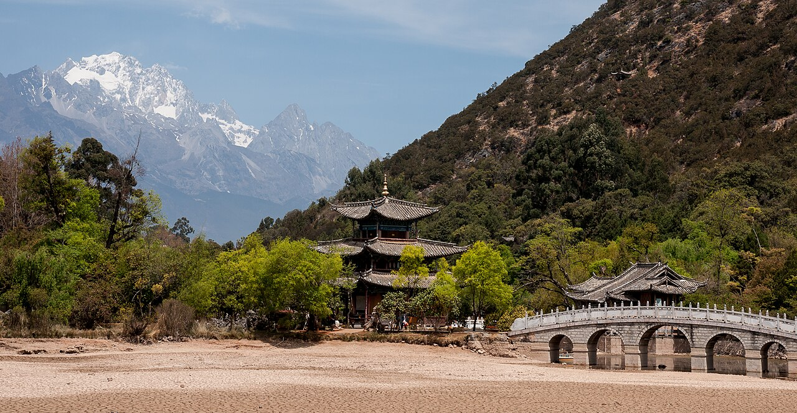
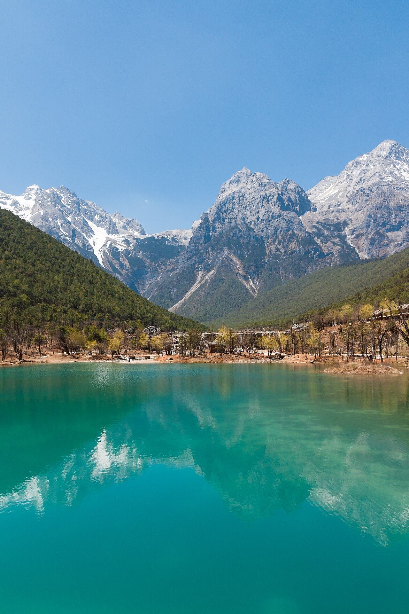

直飞丽江，四晚只住一处
广州—丽江有直飞航班。压成5天后，经昆明的铁路方案会吞掉两个白天和两晚酒店，不再符合“少而精”。直飞落地后直接睡，D2才开始正式游玩。
佛山/广州 → 丽江三义机场 → 虎跳峡观景 → 玉龙雪山甘海子/冰川公园/蓝月谷 → 黑龙潭天气缓冲 → 丽江返程。
五天只保留真正有画面差异的雪山、峡谷、水色和晨光，四晚住同一酒店，不搬行李，也不拿低兴趣城市点填时间。
广州—丽江有直飞航班。压成5天后，经昆明的铁路方案会吞掉两个白天和两晚酒店，不再符合“少而精”。直飞落地后直接睡，D2才开始正式游玩。
D4留给雪山天气补偿、黑龙潭晨光和充分休息，不为了让日程看起来热闹而追加低兴趣项目。
路线：佛山 → 白云机场 → 丽江
今晚：丽江主路酒店｜第1/4晚
关键：落地直接休息
明早：07:30左右出发
路线：丽江 → 上虎跳 → 丽江
今晚：同一酒店｜第2/4晚
关键：只走观景线
明早：按雪山接驳时间
路线：甘海子 → 冰川可选 → 蓝月谷
今晚：同一酒店｜第3/4晚
关键：不适立即降级
明早：看天气再决定
路线：补雪山或黑龙潭晨光
今晚：同一酒店｜第4/4晚
关键：下午不加远点
明早：航班前3小时出门
路线：酒店 → 丽江机场 → 广州
今晚：正常不住
关键：只保航班
晚点：广州备接驳





今日一句话：从佛山去广州白云机场，优先选白天直飞丽江的航班；落地后只入住、吃饭和休息。
必做：确认D2正规小团/直通车、D3玉龙雪山预约与接驳集合点。
可删：所有夜游。
佛山出发去广州白云机场；按航站楼、值机和跨城交通倒推，不卡点。
广州白云 → 丽江三义。优先直飞，避免为省一点钱中转到深夜。
机场 → 酒店；只导航酒店正门，先入住再吃饭。
确认D2车牌/集合点、D3票务、天气和酒店早餐。
广州白云机场 丽江三义机场 / 丽江 香格里大道 酒店
今日一句话：跟正规直通车/小团往返上虎跳，只看峡谷观景线；不走两日高路，也不临时下中虎跳陡梯。
必看：峡谷落差、金沙江急流、虎跳石方向。
可删：体力差时删长台阶，按现场开放选择扶梯。
酒店附近集合；上车前确认路线只到上虎跳、返丽江时间和费用包含项。
丽江 → 虎跳峡镇/景区入口，途中不额外塞购物点。
按开放路线走观景台和栈道；不追求走完全程，留出午饭与休息。
原车返丽江，晚饭后不再加点；睡前再次核对D3索道时段。
虎跳峡景区 上虎跳 游客中心
今日一句话：以预约索道时段为轴安排甘海子和蓝月谷；高海拔只短停，不为海拔牌多爬台阶。
必做：甘海子看完整山体、蓝月谷走一至两个核心湖区。
自动降级：无票、停运或身体不适时，执行“甘海子＋蓝月谷”。
酒店 → 景区游客中心/甘海子；提前确认进山门票、环保车和索道是否分开核验。
有冰川公园票且身体正常：景交 → 索道 → 高处平台短停 → 下撤。
甘海子/游客中心休息、补水、吃简餐；不赶演出。
蓝月谷分段游玩，体力不足就少走一段；按约定集合点返丽江。
玉龙雪山游客中心 / 甘海子 / 蓝月谷
今日一句话：D3顺利就早起看黑龙潭雪山倒影，之后回酒店休息；D3失败且官方允许重新购买/改期，才把D4用作雪山补偿。
必做：二选一，不重复跑雪山又塞市区景点。
可删：黑龙潭绕湖、象山爬升和其余城市闲逛。
D3顺利版：酒店 → 黑龙潭开放入口；云厚等待30—45分钟仍不开山就止损。
古桥、水面和雪山中轴机位；只走平缓核心区，不爬象山。
早餐后回酒店补觉、午饭、整理行李；不加远郊点。
酒店附近清淡晚饭，确认D5航站楼、接送车和退房时间。
丽江 黑龙潭公园 开放入口
今日一句话：只保机场和航班，不在返程前增加景点。
必做：证件、充电宝、药品和贵重物品随身，核对航站楼与行李额。
酒店退房 → 丽江三义机场；节假日和早高峰再多留30分钟。
丽江 → 广州；优先直飞并选择能在正常交通时段到达广州的航班。
按实际航站楼转城际/地铁/打车回佛山；大面积晚点时不冒险赶末班。
广州白云机场 丽江三义机场
丽江 玉龙雪山 官方直通车
| 项目 | 双人预算 | 渠道 | 建议核对 | 包含/额外消费 | 没票怎么办 |
|---|---|---|---|---|---|
| 广州—丽江往返机票 | 3000—4800元 | 航司App/携程/飞猪 | 日期确定即比价 | 核行李额、退改和航站楼 | 前后错一天；不为低价中转到深夜 |
| 虎跳峡门票 | 成人参考45元×2 | 景区官方/正规平台 | D2前一天再核 | 扶梯、小团交通通常另计 | 暴雨或封闭则取消退款 |
| 玉龙雪山进山门票 | 100元×2 | 微信小程序“玉龙雪山服务” | 官方当前支持购买7日内门票 | 环保车、索道另计 | D4只在官方可约时补 |
| 环保运输车 | 20元×2 | 官方购票页 | 与门票一起核 | 不含索道 | 按官方当天交通规则 |
| 冰川公园索道 | 120元×2 | 玉龙雪山官方系统 | 开放预约即查 | 不等于进山门票 | 走甘海子＋蓝月谷 |
| 蓝月谷电瓶车 | 0—120元 | 现场官方窗口 | 入园后按体力 | 非必买 | 分段步行、少走湖区 |
| 黑龙潭 | 0—100元预留 | 现场/丽江官方 | D3晚核入园规则 | 不爬象山 | 云厚或规则不合适就删除 |
日期：D2；导航“虎跳峡景区游客中心”，以订单下车点为准。
入园准备：身份证、防滑鞋、雨具、水、充电宝；雨季先看封闭公告。
走法：入口 → 官方开放栈道/观景台 → 虎跳石方向视角 → 原路/扶梯返回。
必看：峡谷落差和金沙江急流；可删：长台阶、所有高路/中虎跳临时加项。
时长：约2—3小时；体力差时用扶梯并缩短栈道。
下雨：大雨、落石预警或封路直接取消，不自行穿越管制。
离开：回原集合点，原车返丽江同一酒店。
日期：D3；以预约索道时段为轴。
准备：身份证、二维码、薄羽绒/冲锋衣、防晒、充电宝、水，小瓶氧气可备用。
走法：甘海子/游客中心 → 景区交通 → 索道上行 → 平台短停 → 索道下行。
必看：近距离山体；可删：为海拔牌继续爬长台阶。
高反：头痛、胸闷、恶心、步态不稳立即停止上行并下撤，必要时就医。
停运：切换甘海子＋蓝月谷，不把整天耗在等索道。
日期：D3。
走法：景交下车点 → 选一至两个核心湖区 → 水边栈道分段走 → 约定上车点集合。
必看：蓝绿色水面与雪山山谷；可删：把每段水岸走完。
时长：1.5—2.5小时；电瓶车仅在体力差或时间紧时购买。
下雨：小雨看近景，大雨减少栈道并注意湿滑。
离开：按订单集合点返丽江，不擅自换出口。
日期：D4；日出前30分钟到，先核开放入口。
走法：入口 → 古桥/水边主视角 → 雪山中轴机位 → 原路或近路出。
必看：潭水倒影、古建与雪山；可删：绕湖一圈和象山爬升。
时长：60—90分钟；入口先解决厕所和补给。
止损：云厚30—45分钟仍不开山就回酒店，不耗半天等照片。
冰川公园是本线最需要注意高反的地方。担心可在正规点买小瓶备用，但氧气不能代替下撤；不跑跳、不逞强，有心肺基础病或明显不适者出发前咨询医生。
必带。二维码、拍照、联系司机和集合都依赖手机。每天夜里把手机和充电宝充满；乘机时随身携带，容量标识和规则以航司安检为准。
搜索“香格里大道 清汤面”“花马街 清淡家常菜”“丽江 蒸菜 不辣”。优先清汤米线、番茄鸡蛋面、蒸蛋、炒青菜、菌汤锅明确不辣。
自带水、面包/饭团、牛奶或巧克力。虎跳峡与雪山午饭只求安全、快速、清淡，不靠烧烤和凉拌菜补能量。
单人独自出行参考约4390—6420元：机票和门票按1人，酒店整间与部分接送车仍需单人承担。若不上冰川索道、虎跳峡因天气取消，实际会下降；若机票或酒店超过表内上限，需重新比价而不是漏算。
先查前后一天直飞；仍不合适再比较昆明中转航班。5天版不改成长途铁路往返，否则会吞掉核心游玩时间。
通过原平台取消/改期，D2留在酒店休息；不去中虎跳、不走高路、不找私车绕管制。
直接执行低海拔版：甘海子＋蓝月谷。D4只有在官方能重新预约且天气明显改善时才补，不找不明代购。
停止上行、原地休息、吸氧并下撤；头痛胸闷不缓解、呕吐或步态不稳时联系景区医疗点，必要时就医。
D4黑龙潭等待上限30—45分钟；仍不开山就回酒店。雪山是天气景观，不用额外景点或高强度徒步补偿“没看到”。
先换航班日期与普通连锁酒店，再删蓝月谷电瓶车；仍超就取消虎跳峡或改期。不要压正规接驳、官方票和高海拔安全。